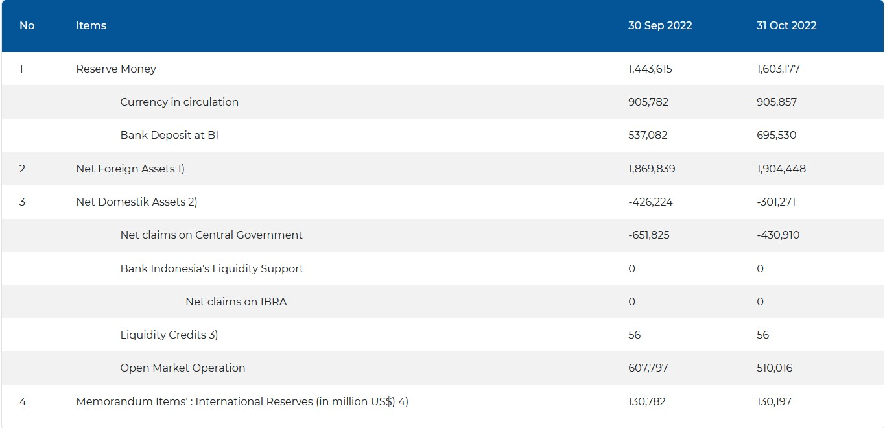

Global Imbalance, exchange rate & Monetary Policy
ECES905205 pertemuan 12
I Made Krisna Gupta
12 September 2022
This week
To understand global imbalance, we need to understand how current account, exchange rate and monetary policy interacts.
Additionally, we want to note how income distribution and investment-boosting policy affects the global imbalance.
Later, we can learn that trade surplus may not equals to competitiveness, let alone welfare!
Mercantilism
Mercantilism adalah paham yang mendorong ekspor dan menghalang-halangi impor.
Pemeluk paham merkantilis percaya bahwa expor > impor (CA surplus) merupakan hal yang baik.
Paham ini besar di sekitar abad 16 sampai abad 18 setelah Smith dan Ricardo mempopulerkan comparative advantage.
Ketika itu, alat tukar adalah emas dan perak. Merkantilis percaya bahwa membatasi impor memperkaya suatu negara dengan memiliki banyak emas dan perak.
Mercantilist no more
Selain argumen comparative advantage, satu konsep penting yang membuat surplus CA tidak sustainable adalah inflasi / nilai tukar.
Jumlah emas di dalam negeri jadi tinggi relatif terhadap emas di pasar internasional.
Harga emas jadi murah relatif terhadap barang \(\rightarrow\) inflasi.
menahan impor jadi semakin sulit & mahal.
- tambah argumen comparative advantage, mercantilisme makin tidak populer dalam memningkatkan kesejahteraan.
Exchange rate
Mercantilism \(\rightarrow\) mempertahankan CA surplus.
Namun CA (secara teori) tidak bisa surplus terus menerus.
Unified currency: $ P_X Q_X = P_M QM $
remember ToT: \(\frac{P_X}{P_M}=\frac{Q_M}{Q_X}\)
If \(\frac{P_X}{P_M} \uparrow\) then \(\frac{Q_M}{Q_X}\)
Exchange rate
Exchange rate: how much foreign money we can buy with domestic money.
Misalnya nilai tukar=14.000 rupiah per USD:
perubahan jadi 14.500 = depresiasi rupiah terhadap dolar = apresiasi dolar terhadap rupiah.
sama dengan 0,0000714 USD ke 0,000069 USD.
Exchange rate

XR & Trade
Misalnya harga CPO di = 12.000 IDR/Kg:
Dengan 14.000, harga jual = 0,857 USD/Kg
Dengan 14.500, harga jual = 0,827 USD/Kg
Harga berubah meski tidak ada perubahan struktur pasar.
Sesuai hukum pasar, harga jual yang rendah akan meningkatkan demand global.
Eksportir untung karena secara rupiah untungnya sama tapi sales meningkat.
Sebaliknya, nilai tukar yang lemah merugikan importir.
XR & CA
Seperti hal-nya perdagangan barang biasa, uang juga tunduk pada permintaan dan penawaran.
Jika permintaan akan IDR meningkat relatif terhadap permintaan akan USD, maka IDR akan terapresiasi.
CA surplus \(\rightarrow\) demand for IDR > USD \(\rightarrow\) IDR appreciates.
Setelah \(\frac{IDR}{USD} \downarrow\), ekspor relatif lebih mahal dari impor \(\rightarrow\) CA \(\downarrow\).
Pada akhirnya CA akan diseimbangkan oleh ekuilibrium baru nilai tukar.
XR & CA
Jika ekspor dipermudah dan impor dipersulit seperti paham merkantilis, maka dolar akan tersimpan di sistem keuangan.
jika ditukar dengan rupiah, maka rupiah akan berkurang di pasar uang dan membanjiri pasar barang:
rupiah menguat di pasar uang, tapi melemah di pasar barang (inflasi)
jika tidak ditukar, dolar akan bertahan di pasar uang dan lama-lama jadi banyak (artinya rupiah tetap menguat)
Artinya, surplus CA tidak sustainable. Lagipula, uang nganggur = penggunaan tidak efisien.
XR & FA
Demand mata uang tidak hanya didorong oleh pasar barang, tapi juga pasar modal!
Ingat IS - LM? Apa yang terjadi ketika \(r \uparrow\) ?
naiknya r menyerap uang ke sistem perbankan.
uang beredar berkurang, harga uang naik relatif terhadap harga barang.
CB response to inflation: \(r \uparrow\), \(P \downarrow\).
XR & FA
Di pasar uang, nilai tukar juga digunakan untuk mengendalikan nilai tukar.
naiknya interest rate domestik akan menaikkan daya tawar aset di Indonesia.
orang akan mencari rupiah untuk ditukar dengan surat berharga Indonesia.
demand rupiah naik relatif terhadap mata uang asing.
rupiah apresiasi -> demand ekspor berkurang, demand impor naik.
XR, CA, FA
Kebijakan meningkatnya aktivitas pasar modal juga didorong kebijakan pemerintah.
aset yang masuk ke Indonesia mendorong FA positive \(\rightarrow\) CAD!
CA dan XR memiliki dinamika di mana keduanya dapat saling mempengaruhi:
lewat perdagangan barang, CA surplus \(\rightarrow\), XR \(\uparrow\), surplus CA berkurang.
lewat perdagangan aset: demand local asset \(\rightarrow\) XR \(\uparrow\), surplus CA berkurang.
Merkantilis dan investasi asing ke dalam negeri negates each other!
Global imbalance: why?
baik CAS maupun CAD secara teori tidak akan sustainable.
- ceteris paribus, akan ada correction mechanism melalui exchange rate.
Namun kenapa global imbalance bisa terjadi secara persistent?
- Aus, NZ, US, UK vs Jerman, Jepang, China, Taiwan.
- Hal ini karena aktivitas Central Bank (CB)
Central Bank
Meski dibilang bahwa uang tunduk pada supply demand seperti halnya barang, uang adalah produk monopoli,
- produksi mata uang diatur oleh CB.
CB memiliki aktivitas yang cukup besar di pasar uang maupun ekonomi domestik.
mengendalikan inflasi.
menjaga nilai tukar mata uang.
Kemampuan intervensi CB dapat kita observe dari balance sheetnya.
Balance sheet BI
Monetary indicator billion IDR
sumber: indikator moneter BI
Intervention mechanism
Balance sheet CB sangat mempengaruhi perekonomian domestik (in case of the Fed, PBoC, ECB & BoJ, the world)
pelepasan aset oleh CB \(\rightarrow\) penyerapan uang beredar \(\rightarrow\) mengurangi inflasi.
aset purchase oleh CB \(\rightarrow\) uang beredar naik \(\rightarrow\) mendorong PDB & inflasi.
aset asing yang dimiliki CB inilah yang kita sebut cadev.
controlling XR
- say BI ingin apresiasi IDR terhadap USD, gimana caranya?
untuk apresiasi IDR, BI perlu mengurangi sirkulasi IDR di pasar uang.
BI menjual aset asing (denominasi USD), lalu lepas USD nya, tukar dengan IDR.
sebaliknya juga bisa, depresiasi IDR dilakukan dengan membeli aset asing dengan IDR.
Kenapa BI intervensi?
ketika BI mengumpulkan cadev, BI menarik dolar dari pasar \(\rightarrow\) dolar yang dapat digunakan untuk impor jadi berkurang!
Pengumpulan cadev oleh BI = menyeimbangkan CA yang surplus!
Cadev yang sudah dikumpulakn dapat digunakan di masa depan sewaktu IDN membutuhkan dollar untuk menahan nilai IDR dari terdepresiasi.
Rezim XR
gambaran XR sebelumnya adalah “clean float”, di mana nilai tukar mata uang benar-benar bebas intervensi sentralistik.
tapi sangat sedikit negara yang clean float. Mostly “dirty float”: pasar tetap bekerja tapi CB intervensi from time to time.
masih lebih float daripada “fixed exchange rate”.
Tapi kenapa CB ingin manage nilai tukar?
Kenapa intervensi XR?
memiliki cadev dulu dengan merelakan tidak impor. Cadev berguna untuk intervensi ketika ada krisis. Ada rule of thumb CB memiliki cadev yang cukup untuk 3-6 bulan impor.
Mendukung merkantilis: dengan menyerap dolar tiap kali CA surplus, CB bisa menjaga nilai tukar tetap rendah dan ekspor tetap tinggi!
Mendukung investasi: dengan menjaga rupiah tetap stabil, pengutang dolar dapat memastikan nilai utangnya tidak membengkak akibat dampak nilai tukar.
Stabilitas nilai tukar overall lebih disukai pasar -> prudence!
Aktivitas CB
AKtivitas CB
Aktivitas CB
Global imbalance: why?
CB tidak mungkin intervensi terus menerus. Kenapa?
Bretton woods: ketika mata uang masih di-peg ke emas, US sampai kehabisan emas karena demand dolar begitu tinggi.
Dengan kata lain, mata uang asing di pasar bakal habis kalau dikumpulin terus:
yang surplus terus akan kehabisan aset utk dibeli
yang defisit kehabisan aset utk dijual.
Exorbitant privilege
tapi aset US sampai saat ini masih considered safe:
- seberapapun aset US dilepas, pasti bakal dibeli.
Sejarahnya panjang, sejak bretton woods, trade dilakukan dalam USD karena USD dipeg ke emas.
Tentunya juga karena US jaman dulu ekonominya sangat besar. Baik ekspor maupun impornya besar.
- aman pegang USD karena ketika negara lain berkurang tradenya, kita akan selalu bisa dagang dengan US.
Exorbitant privilege
Global CB reserves
sumber: IMF
Exorbitant privilege
from CFR
Competitiveness or currency manipulation?
Unsurprisingly, China dan Jepang, 2 negara paling surplus, pegang aset denominasi dolar paling banyak.
- untuk tetap surplus, mereka terus beli bonds US tanpa harus impor.
Unsurprisingly, 2 negara tersebut mengalami boom aset, terutama konstruksi.
Jepang melambat ekonominya sejak 90-an, setelah aset-asetnya ternyata ga ada returnnya.
China sedang mengalami perlambatan tsb. We’ll see seperti apa landingnya.
Big Mac Index
Fenomena ini mendorong studi tentang undervaluation / overvaluation of currency di literatur ekonomi internasional.
Bahwa nilai mata uang yang ada saat ini tidak mencerminkan nilai aslinya sebagai alat tukar.
- nilai asli sebuah ekonomi tetaplah what the economy produce and consume.
Salah satu study yang menarik adalah BigMac Index dari majalah the economist.
Next week
Konsekuensi global imbalance pada distribusi pendapatan.
- What mercantilist got wrong
Mulai konteks Indonesia.